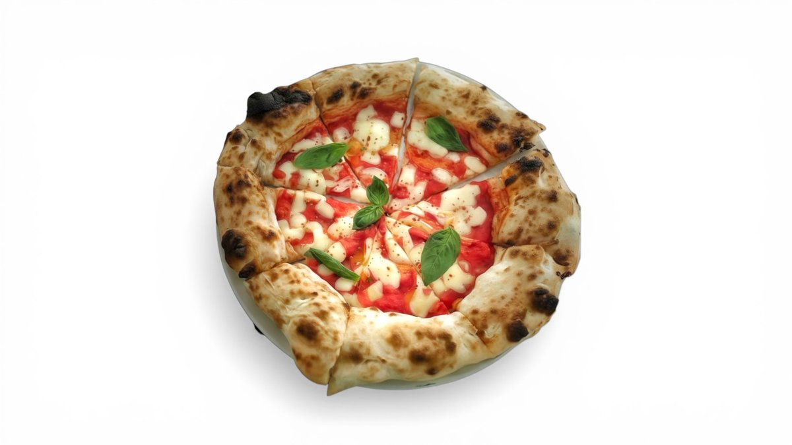

Margherita
37 leiAluat, pulpă de roșii, mozzarella fior di latte D.O.C., busuioc, ulei de măsline Evo · 450–500 g
Blat pufos copt pe vatră, cu marginea rumenită și aerată. Mozzarella fior di latte D.O.C., prosciutto crudo, trufe și busuioc proaspăt — ingrediente italiene adevărate, în fiecare felie.
La ȘORO facem pizza așa cum se face în Napoli: aluat lăsat la dospit îndelung, întins cu mâna și copt pe vatră până când marginea se umflă și se rumenește frumos, cu bulele acelea specifice.
Punem în farfurie doar ingrediente adevărate — mozzarella fior di latte D.O.C., prosciutto crudo, parmezan D.O.P., trufe negre, salsiccia napoletană și ulei de măsline extravirgin. Fără compromisuri, fără scurtături.
De aceea botoșănenii ne-au dat o notă de 4,8 din 5 pe Google. Ne găsești pe Strada Octav Onicescu — vino, comandă sau ia la pachet o pizza caldă.

Trei lucruri care fac diferența dintre o pizza obișnuită și o pizza napoletană adevărată.
Aluat dospit lung și copt pe vatră la foc mare — margine pufoasă, aerată și cu bulele rumenite specifice pizzei napoletane.
Mozzarella fior di latte D.O.C., parmezan D.O.P., mozzarella de bivoliță și trufe negre. Ingrediente cu denumire de origine, importate din Italia.
Toate pizzele noastre au Ø 32 cm și 450–600 g. Nicio felie mică — doar o pizza mare, plină și gustoasă de fiecare dată.
Câteva dintre pizzele care ies din cuptorul nostru în fiecare zi.
254 de recenzii pe Google și 5 din 5 pe Facebook. Iată câteva dintre ele.
„Cea mai bună pizza din Botoșani. Blat pufos, ingrediente de calitate — se simte că e făcută cu grijă.”
„Mâncare, servire, atmosferă — totul la superlativ. Nota 10!”
„Pizza napoletană adevărată, exact ca în Italia. Revin de fiecare dată cu drag.”